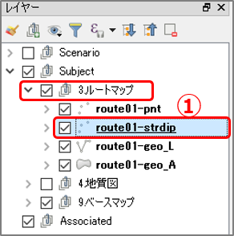
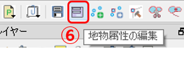
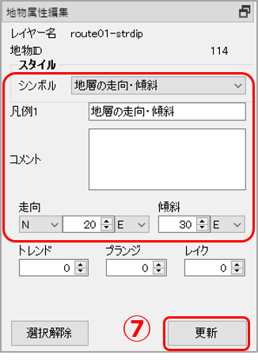
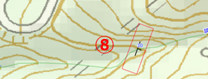

10. QGISでルートマップを作る
QGISでのルートマップの作成法
野外調査の結果をルートマップとしてQGISで作成するには「Subject」レイヤーグループ内に「ルートマップ」レイヤーグループを作成し、その中の各レイヤーに以下のように記録していきます。
- 走向・傾斜データは「strdip」レイヤーに地物を作成して記録する。
- 露頭の分布や観察メモは「geo_A」レイヤーに地物を作成して記録する。
- 断層などの線構造は「geo_L」レイヤーに地物を作成して記録する。
【演習1】QGISでのルートマップの作成法を理解する
サンプルプロジェクトファイルを用いて、QGISでルートマップを作成してみましょう。
1.露頭の走向・傾斜を記録する(strdipレイヤー)
下図のNo.03とNo.06の露頭の走向・傾斜を「ルートマップ」レイヤーに記録してみましょう。

以下の手順で行います。
① 「レイヤーパネル」の[Subject]-[3.ルートマップ]を展開し、route01-strdip」レイヤーをクリックして選択します。

「Subject」グループに作成されたマップは以下の4つのレイヤーから成っています。
-pnt :点（ポイント）レイヤー。観測場所の点情報を表します。
-strdip :点（ポイント）レイヤー。走向・傾斜の点情報を表します。
-geo_L :線（ライン）レイヤー。地層の境界線などの線情報を表します。
-geo_A :ポリゴンレイヤー。露頭や地層面などの面情報を表します。
編集を行う場合は、各々のレイヤーを選択してください。
② ツールバーの [地物の追加] をクリックして、「追加モード」にします。

③ マップキャンバス上で、走向・傾斜を記録したい場所にマウスカーソルを移動してクリックして、点を追加します。③ マップキャンバス上で、走向・傾斜を記録したい場所にマウスカーソルを移動してクリックして、点を追加します。

④ ツールバー[地物の追加] をクリックして追加モードから抜けます。
⑤ ③で作成した点を選択（マウスでクリックまたは範囲選択）します。
⑥ ツールバーの [地物属性の編集] をクリックして、「属性編集ダイアログ」を表示します。

⑦ 走向・傾斜の属性を入力して、[OK] をクリックします。

マップキャンバス上で追加した③の点が、走向・傾斜マークに変わっていることを確認します。

マップキャンバスの表示範囲を変えるには、以下のいずれかで行います。
・地図表示移動: キーボードの[矢印]キーを押下、または[スペース]を押しながらマウスでドラッグ
・ズームイン・アウト: [PgUp][PgDn]キー、またはマウスホイールを回転